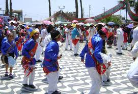
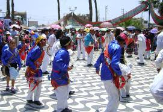

Sobre Grocio Prado
Grocio Prado, ubicado en la provincia de Chincha, departamento de Ica, es un tesoro escondido lleno de historia, tradiciones, cultura viva y belleza natural. Nuestra región ofrece experiencias únicas que mezclan el pasado con el presente, brindando a los visitantes una visión auténtica de la vida en Grocio Prado.
Ven y disfruta de festividades llenas de color, música, y alegría, mientras exploras paisajes que te dejarán sin aliento.
Principales Atracciones
Parroquia San Pedro
Admira la arquitectura colonial y siente la paz en este importante centro religioso de Grocio Prado.
La Parroquia San Pedro es un símbolo de la fe y la historia de Grocio Prado. Cada rincón cuenta historias de la devoción de su gente y es el escenario de importantes celebraciones religiosas durante todo el año.
Casa de la Beatita
Visita la casa de Melchorita Saravia, una figura espiritual venerada en nuestra región.
La Casa de la Beatita es un lugar de peregrinación y reflexión. Melchora Saravia Tasayco, conocida como "La Melchorita", es una figura venerada por su vida piadosa y los numerosos milagros atribuidos a su intercesión.
Plaza de Armas
Relájate y observa la vida cotidiana en el corazón de nuestro distrito.
La Plaza de Armas es el alma de la comunidad. Rodeada de frondosos árboles y una atmósfera tranquila, este es el lugar perfecto para disfrutar de eventos culturales, ferias y actividades al aire libre que celebran la vida y la tradición de Grocio Prado.
Cerro San Juan
Disfruta de una vista panorámica de todo el distrito desde este mirador natural.
El Cerro San Juan es un destino ideal para los amantes de la naturaleza y la aventura. Subir a su cima te recompensa con una vista impresionante de los campos, el pueblo y la vastedad del horizonte.
Cultura y Tradiciones
Grocio Prado es un lugar rico en tradiciones y celebraciones culturales. Entre las festividades más destacadas se encuentran:
- Semana Santa: Una serie de celebraciones religiosas llenas de devoción, donde se realizan procesiones, representaciones y actos de fe que invitan a la reflexión y la unión comunitaria.
- Fiesta de San Pedro: Una colorida festividad que honra al patrón de los pescadores, con eventos que incluyen danzas típicas, música y la bendición de las aguas.
.png) 


Gastronomía
Deléitate con nuestros platos típicos que reflejan la rica herencia culinaria de la región, preparados con ingredientes locales y recetas transmitidas de generación en generación:
Carapulcra Chinchana
Un delicioso guiso a base de papa seca y carne de cerdo.
1. **Remojar la papa seca:** Dejar en agua caliente por 30 minutos hasta que esté suave.
2. **Preparar el aderezo:** En una olla, dorar la cebolla, ajo y ají panca con un poco de aceite.
3. **Agregar la carne:** Incorpora trozos de cerdo previamente sazonados y fríe hasta dorar.
4. **Añadir papa seca y caldo:** Mezclar y cocinar a fuego lento por 1 hora.
5. **Incorporar maní y especias:** Agregar maní molido, comino y sal al gusto.
6. **Cocción final:** Dejar cocinar hasta que los sabores se integren por completo. Servir caliente con arroz.
Arroz con Pato
Plato emblemático que combina arroz sazonado con tiernas presas de pato.
1. **Sazonar el pato:** Marinar el pato con sal, pimienta, comino y ajo durante al menos 1 hora.
2. **Sellar el pato:** En una olla grande, dorar las piezas de pato hasta que estén doradas por ambos lados.
3. **Preparar el aderezo:** En la misma olla, freír cebolla, ajo, ají amarillo y ají panca.
4. **Añadir cilantro y cerveza:** Licuar hojas de cilantro con cerveza negra y agregar a la olla.
5. **Incorporar el arroz:** Añadir arroz, caldo de pollo y dejar cocinar a fuego lento.
6. **Cocción final:** Cocinar hasta que el arroz esté tierno y el pato jugoso. Servir decorado con hojas de cilantro fresco.
Contacto e Información
Grocio Prado está ubicado a 210 km al sur de Lima, aproximadamente a 3 horas en auto por la Panamericana Sur. Ven y disfruta de un lugar donde la historia y la tradición se encuentran con la calidez de su gente.
Para más información:
- Email: turismo@grocioprado.gob.pe
- Teléfono: (056) 123-4567